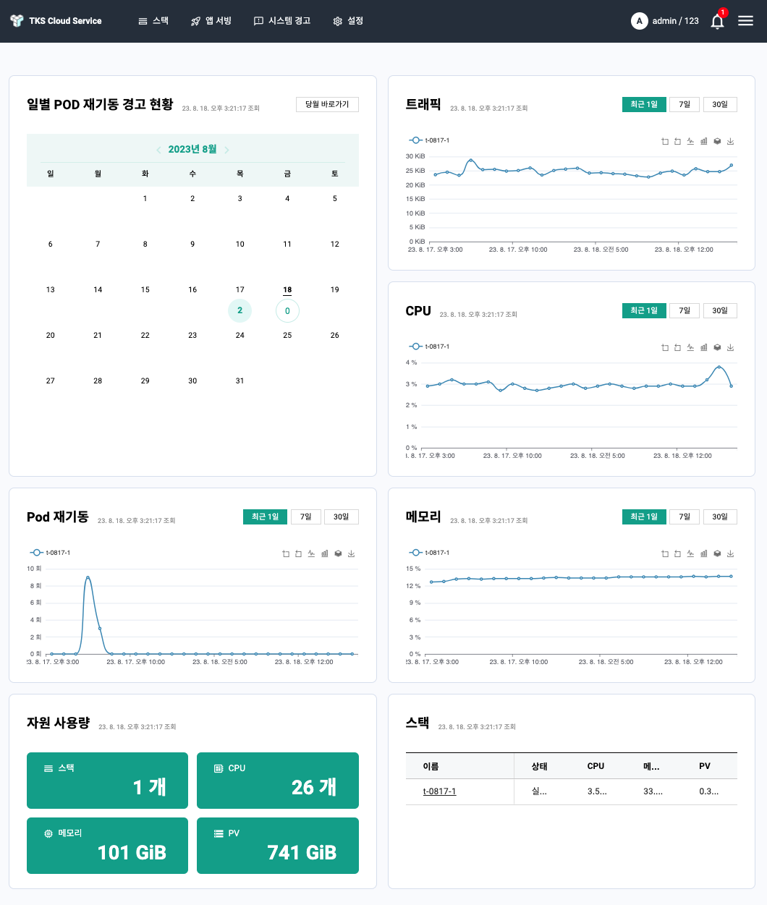
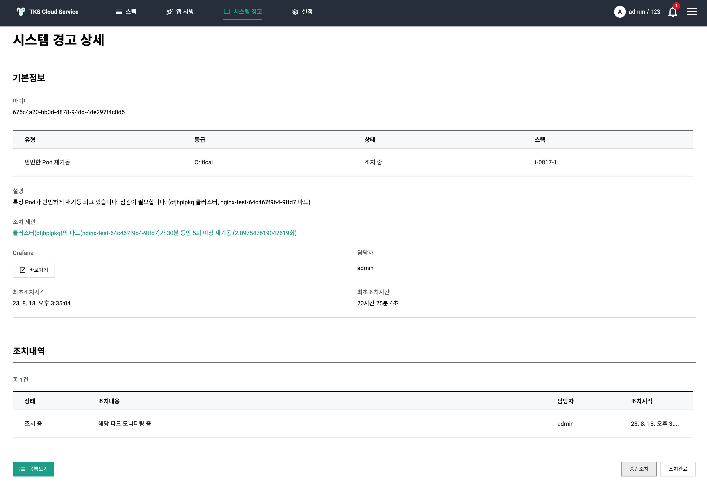

TKS Quck Start (운영)¶
깨끗히 청소 하기¶
TKS는 안전한 자원 삭제를 위해 자원 삭제시 "의존성이 있는 자원 존재여부" 에 대한 사전 확인 기능을 제공합니다.
- 스택의 삭제
- 앱서빙을 통해 앱이 설치된 스택은 삭제되지 않습니다. 먼저 앱서빙을 삭제해 주세요.
- 모니터링 유형이 Primary인 스택의 경우, 다른 스택이 있으면 삭제되지 않습니다. 모니터링 유형이 Member인 모든 스택을 삭제 후 삭제해 주세요.
- 클라우드계정 삭제
- 클라우드계정을 사용하는 스택이 있는 경우에도 삭제 되지 않습니다. 먼저 클라우드계정을 사용하는 모든 스택을 삭제 후 삭제해 주세요.
TKS 운영하기¶
대시보드 이해하기¶
TKS는 최종적으로 사용자가 앱현대화를 통해 서비스를 유연하고 효율적으로 운영하는 것을 목적으로 합니다. 따라서 TKS의 대시보드는 단순히 Infra에 대한 상태가 아닌, Infra에서 동작하는 응용에 대한 정보를 단순화 시켜서 제공하고 있습니다.
아래는 TKS 접속시 볼 수 있는 대시보드 화면입니다.

대시보드는 크게 3개의 컨셥을 가지고 화면을 분활하여 정보를 제공합니다.
-
서비스 안전성 : 상단 우측
서비스의 안전성은 일별 Pod 재기동 경고 현황 수에 의해 추상화 됩니다. 파드가 재 기동되는 경우는 다양하지만 크게 보면 아래와 같이 두가지 경우로 나눠집니다.
- 자원의 부족에 의한 파드 재배치
- 오류에 의한 기동 실패
자원 부족의 경우 IaaS 자원의 부족인 경우도 있지만, Pod Spec의 오류에 의한 문제의 경우도 종종 발생합니다. 그 외 Pod에 설치되는 SW 오류에 의해, 특정 Event나 특정 수 이상의 서비스 Session 발생 시 Pod 재기동이 발생하기도 합니다.
따라서 Pod 재기동은 Kubernetes상에서 운영중인 SW의 안정성과 Pod 설정 오류등 워크로드의 안전성에 대한 지표를 제공 합니다. -
서비스 자원 특성: 상단 좌측
서비스의 증가는 유입 Traffic의 증가로 추상화 될 수 있다. 따라서 유입 Traffic의 증가와 같이 자원 사용량 (CPU/Memory) 추세 확인을 통해, 앞으로 증/감설 계획을 세울 수 있습니다. 이를 통해 비용 효율적으로 자원을 활용 할 수 있는 데이터를 제공합니다.
-
자원 현황: 하단
생성된 스택의 수와 사용된 자원의 개수를 한번에 볼 수 있게 정리해 준다. 이를 통해 IaaS 비용을 산정할 수 있습니다.
시스템경고 이해하기¶
TKS는 단순한 시스템 경고의 전파가 아니라 발생한 문제에 대한 해결 방안과 문제 해결 히스토리 관리 기능을 제공합니다. 이를 통해 시간이 지남에 따라 시스템경고가 발생하는 빈도를 줄이고, 궁극적으로 사용자의 서비스 운영 역량을 높이는 것을 목표로 하고 있습니다.
아래는 시스템경고 상세 화면에 대한 예시입니다.

TKS의 시스템 경고는 경고에 대한 설명 뿐 아니라, 발생한 위치 및 조치 제안을 같이 제공합니다. 또한 시스템경고 발생 부터 최초 인지 및 해결까지의 시간을 관리함으로 사용자 스스로 장애대응 역량을 수치화하여 관리 할 수 있습니다. 특히, 조치내역에 대한 히스토리가 시간순서대로 관리 함으로, 사용자의 운영 노하우를 데이타화 하여 관리 할 수 있습니다.
일반설정 및 사용자 관리¶
TKS는 일발설정 기능을 통해, TKS의 사용자들간에 공유되야 할 정보 (e.g 연락처)를 간단하게 공유 할 수 있습니다. 또한 자체적으로 2가지 종류의 사용자를 제공합니다. (관리자/사용자)
- 관라자 권한는 TKS의 모든 권한을 갖는 사용자 입니다.
- 사용자 권한은 스택과 같은 인프라의 생성 및 설정 및 시스템경고 처리는 불가능 하지만, 스택의 사용 및 앱서빙의 사용은 가능합니다. 사용자 권한은 부서별 혹은 회사별 협력 개발 시, 유용한 권한 입니다.